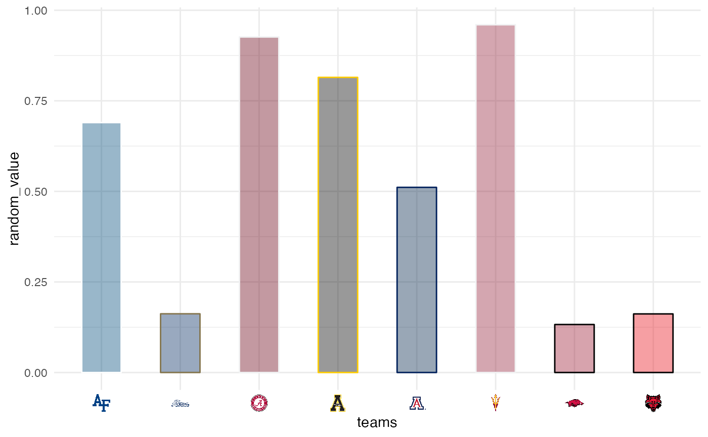
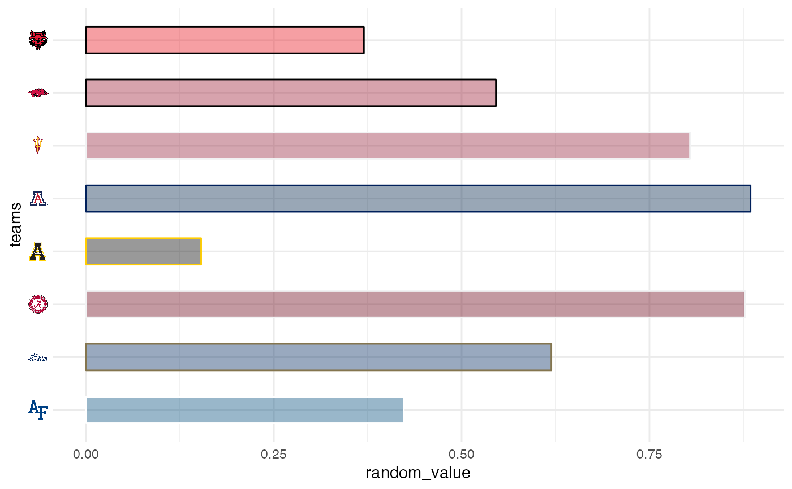
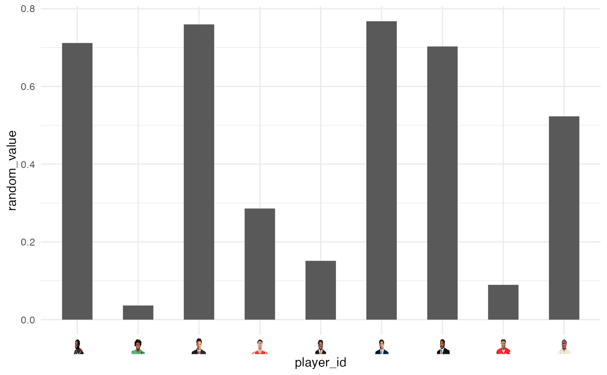
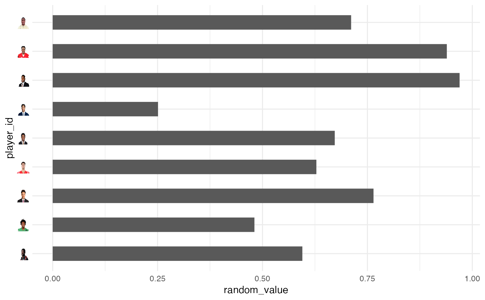

In conjunction with the ggplot2::theme system, the following element_
functions enable images in non-data components of the plot, e.g. axis text.
element_cfb_logo(): draws college team logos instead of their names.
element_cfb_wordmark(): draws college team wordmarks instead of their names.
element_cfb_headshot(): draws player headshots instead of their ESPN player IDs.
element_path(): draws images from valid image URLs instead of the URL.
element_cfb_logo(
alpha = NULL,
colour = NA,
hjust = NULL,
vjust = NULL,
color = NULL,
size = 0.5
)
element_cfb_wordmark(
alpha = NULL,
colour = NA,
hjust = NULL,
vjust = NULL,
color = NULL,
size = 0.5
)
element_cfb_headshot(
alpha = NULL,
colour = NA,
hjust = NULL,
vjust = NULL,
color = NULL,
size = 0.5
)
element_path(
alpha = NULL,
colour = NA,
hjust = NULL,
vjust = NULL,
color = NULL,
size = 0.5
)The alpha channel, i.e. transparency level, as a numerical value between 0 and 1.
The image will be colorized with this color. Use the
special character "b/w" to set it to black and white. For more information
on valid color names in ggplot2 see
https://ggplot2.tidyverse.org/articles/ggplot2-specs.html?q=colour#colour-and-fill.
The horizontal and vertical adjustment respectively. Must be a numerical value between 0 and 1.
The output grob size in cm (!).
An S3 object of class element.
The elements translate CFB team names or players' ESPN IDs into logo images or player headshots, respectively.
geom_cfb_logos(), geom_cfb_wordmarks(), geom_cfb_headshots(),
and geom_from_path() for more information on valid team names,
player IDs, and other parameters.
# \donttest{
library(cfbplotR)
library(ggplot2)
team_abbr <- valid_team_names()
# remove conference logos from this example
team_abbr <- team_abbr[1:8]
df <- data.frame(
random_value = runif(length(team_abbr), 0, 1),
teams = team_abbr
)
# use logos for x-axis
ggplot(df, aes(x = teams, y = random_value)) +
geom_col(aes(color = teams, fill = teams), width = 0.5) +
scale_color_cfb(alt_colors = team_abbr) +
scale_fill_cfb(alpha = 0.4) +
theme_minimal() +
theme(axis.text.x = element_cfb_logo())

# use logos for y-axis
ggplot(df, aes(y = teams, x = random_value)) +
geom_col(aes(color = teams, fill = teams), width = 0.5) +
scale_color_cfb(alt_colors = team_abbr) +
scale_fill_cfb(alpha = 0.4) +
theme_minimal() +
theme(axis.text.y = element_cfb_logo())

#############################################################################
# Headshot Examples
#############################################################################
library(cfbplotR)
library(ggplot2)
# Silence an nflreadr message that is irrelevant here
old <- options(nflreadr.cache_warning = FALSE)
dfh <- data.frame(
random_value = runif(9, 0, 1),
player_id = c("4361182",
"4426385",
"4567048",
"4372519",
"4429013",
"4240069",
"4360932",
"4362874",
"4429299")
)
# use headshots for x-axis
ggplot(dfh, aes(x = player_id, y = random_value)) +
geom_col(width = 0.5) +
theme_minimal() +
theme(axis.text.x = element_cfb_headshot())

# use headshots for y-axis
ggplot(dfh, aes(y = player_id, x = random_value)) +
geom_col(width = 0.5) +
theme_minimal() +
theme(axis.text.y = element_cfb_headshot())

#############################################################################
# Wordmarks and other Images
#############################################################################
library(ggplot2)
df <- dplyr::mutate(mtcars,
team = sample(c("Utah", "Arizona State", "Oregon", "UCLA"), nrow(mtcars), TRUE),
player = sample(
c("4361182", "4426385", "4567048", "4429013"),
nrow(mtcars),
TRUE
)
)
ggplot(df, aes(x = mpg, y = disp)) +
geom_point() +
facet_wrap(vars(team)) +
labs(
title = tools::toTitleCase("These are random teams and data"),
subtitle = "I just want to show how the cfbplotR theme elements work",
caption = "https://raw.githubusercontent.com/sportsdataverse/sportsdataverse-web/master/public/images/logo.png"
) +
theme_minimal() +
theme(
plot.title.position = "plot",
plot.title = element_text(face = "bold"),
axis.title = element_blank(),
# make wordmarks of team abbreviations
strip.text = element_cfb_wordmark(size = 1),
# load image from url in caption
plot.caption = element_path(hjust = 1, size = 0.4)
)

# }